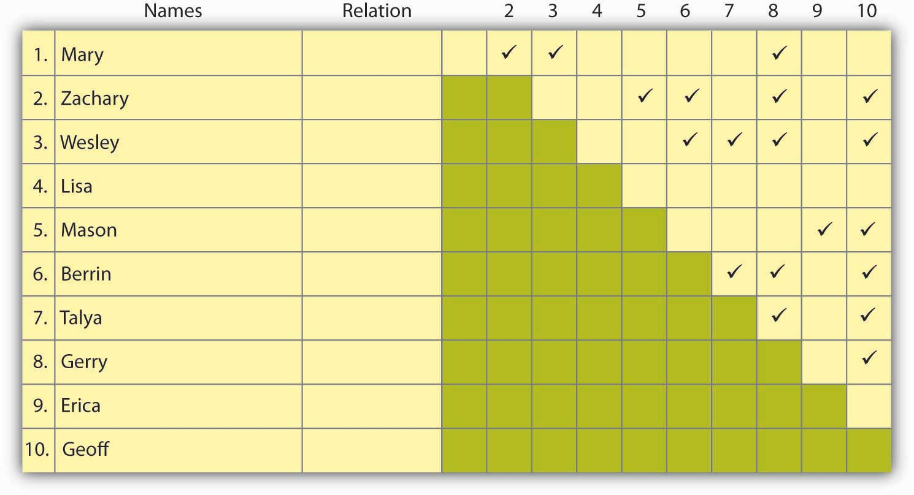

As you have already learned, the mapping and measuring of relationships and flows between people, groups, organizations, computers, Web sites, and other information/knowledge processing entities is called social network analysis. Social network analysis is not the same thing as networkingSystems that allow members of a specific site to learn about other members’ skills, talents, knowledge, or preferences., where networking is the activities you might engage in to build your social network. In this section, you will learn the basics of mapping your own social network. It will give you a sense of the size of your network, along with some other useful characteristics to work with such as density.
There are a number of possible purposes for a social network.The first author, Mason A. Carpenter, has been using social networking mapping in his classes for the past 15 years. This particular mapping tool has evolved over that time and is inspired by the larger body of social network research. There is no magic to this particular grid tool, and you are welcome to use and adapt it as the need arises. This grid simply asks students to identify who might be helpful in their network, the nature of their relationship with these individuals, and which members know each other. As a manager, you are probably most concerned with these six.Cross, R., Borgatti, S., & Parker, A. (2002). Making invisible work visible. California Management Review, 44(2), 25–46. First, a communication network is the informal structure of an organization as represented in ongoing patterns of interaction, either in general or with respect to a given issue. Second, an information network shows who goes to whom for advice on work-related matters. Third, a problem-solving network indicates who goes to whom to engage in dialogue that helps people solve problems at work. Fourth, a knowledge network captures who is aware of whose knowledge and skills, and an access network (fifth) shows who has access to whose knowledge and expertise. The sixth and final purpose is a career networkShows who helps an actor progress in their career., which reflects those individuals in your network who are likely to be helpful in your search for a new job or quest for a promotion. Given that you are reading a principles of management book, a career network may be the most interesting to you.
Let’s assume that we are mapping your career network. A career network is simply those individuals who might be instrumental in helping you secure a new job or promotion. You can simply draft out a list of names, using names or just initials, but the goal is to develop a fairly complete list. The list can be as long or as short as you want to make it, though keep in mind that there is probably a limit to how effectively you can maintain a large network where you expect each relationship to be strong and meaningful, or at least one where the contact would probably respond to your request for assistance. Managers with 15 years of experience might list 30 to 50 names, while a college student might list 15 to 25 names. These are just averages, though, and individuals can be much higher or lower, depending on their situation.
The following three questions are sometimes useful in drafting out this initial list.
Now that you have your list, briefly categorize the names based on (1) the strength of your relationship (very close, close, not very close, distant) and (2) who they are and where they come from. For this second facet, you might want to consider the following:
| Total no. of ties _______ | No. Ties | % of Total |
|---|---|---|
| 1. Your senior (higher up in your or another organization) | _____ | _____ |
| 2. Your peer (at your level in your or another organization) | _____ | _____ |
| 3. Your junior (below you in your or another organization) | _____ | _____ |
| 4. From a different functional or product area | _____ | _____ |
| 5. From a different business unit or office in your firm | _____ | _____ |
| 6. From a different firm | _____ | _____ |
| 7. The same gender as you are | _____ | _____ |
| 8. Members of the same racial or ethnic group as you are | _____ | _____ |
| 9. The same nationality as you are | _____ | _____ |
You will come back to this information after the next step, but you already have a better picture of your network just after this second step. For instance, you know how many people are in this network, and the relative presence of different types of network members.
Transfer your list of names to a grid like the one shown in the Sample Network Grid. Be sure to note your relationship with them, in terms ranging from very close to distant. To complete the grid you place a check in the box where one individual knows another. For instance, in this exhibit, Mary knows Zachary, Wesley, and Gerry.
Figure 9.15 Sample Network Grid
Once you have finished check-marking who knows whom, compute the density of your network using the following:
|
a. Total number of people in your network To follow our example, N = 10 (i.e., there are 10 names) |
N = __10_ |
|
b. Maximum Density (i.e., if everyone in your network knew each other). Our maximum density is (10 × 9) ÷ 2 = 45 [N × (N - 1)] ÷ 2 = M |
M = __45_ |
|
c. Total number of checkmarks on your network grid (i.e., the number of relationships among people in your network). In our example, C = 19. |
C = __19_ |
|
d. Density of Your Network. Our D = 19 ÷ 45 = .42 C ÷ M = D |
D = __.42_ |
In our example, if our calculations are correct, the density of this network is .42. If each person in this network knew every other person, then the density would be 1.0; if no one knew one another, outside of the person whose network this was, then the density would be 0.0. In our example, the network density is close to the middle, which means that about fewer than half the people have common network ties, while a little more than half have unique relationships. You might also want to run this calculation for a subset of the ties based on whether they are very strong, distant, and so on. If you do use a subset, though, then remember to use that number as your starting point (N = no. very close ties, for instance).
There is little research to tell us exactly how big (or small) or how dense (or sparse) the ideal network should be, although there are some facts to consider. Remember Dunbar’s number from earlier in the chapter? Some studies have suggested an upper limit of 150 network ties, but, again, that is a pretty big number if you also characterize those ties as “very close.” It is perhaps more reasonable if a few are very close and the rest are spread out in the “close” to “distant” categories. If you have a network of 15 to 20 people whose names come to mind quickly, that is probably a useful size, particularly if your network density is around the middle. Remember, you just set up a network where you were sort of the center point, and each member of your network, even if he/she is peripheral to yours, is the center of his/her own network.
A good number for density is between .40 and .60—that is, some people know one another, and some do not. The advantage of having people in your network who know one another is that they are likely to communicate more frequently and provide a set of shared relationships that you can use to move information, ideas, and other resources forward. Also, if any one of your network members, who knows no one else in the network, leaves the network for some reason, you will no longer have access to the stuff he or she provided for you.
You also want a number of unique ties though, since those relationships provide you access to unique information, resources, and ideas. Because of the network theory principles of reciprocity and exchange your network is likely to be more responsive when you have helped others in the network (reciprocate favors), and such reciprocation is most likely when you have access to unique resources (the exchange principle).
Let’s take a look at the information you now have about your network. From step 2 you have the size of your network, and the percentage of ties that break out by relationship (very strong to distant) and characteristics (company, demographics, and so on). From step 3 you have the density of your network, and that helps shed additional light on the information generated in step 2.
This puts you in a pretty good position. If you think your network is too small, you have a way to identify the gaps in your network that, if filled, would both grow your network and fill those key gaps. If density is too high, then the pathway is similar as well. If you think that you have a great network already, then you can validate this with the information generated in steps 2 and 3. In all likelihood, you will see opportunities to shore up gaps and develop strategies for doing so.
Here are some pointers from effective managers on how to make sure your network is creating value for you:
You now have a good understanding of how to analyze the basic characteristics of your social network or that of another individual. In this section you were introduced to a pencil-and-paper approach to social network analysis, though you can also use electronic forms that map more complex relationships, and perhaps show how multiple networks are tied (or not tied) together. This section closed with showing you how to bolster the value created by your social network.